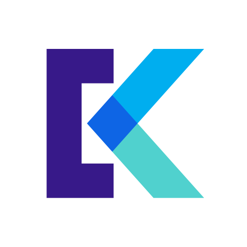

Here is a list of selected projects I’ve been lucky enough to be involved with in the recent years:
UIKonf
Organizer
UIKonf is one of the top iOS conferences in the world. I’ve been organizing it with Sabine Geithner, Bianca Walterspiel Stromlund and Julia Kallenberg.
CallTap
Founder

CallTap is the missing phone call recorder on your iPhone. It is easy to use and does not try to scam and trick you into starting a subscription. I only want your money if you’re happy with it.
Fifteen Jugglers
Founder

I started Fifteen Jugglers back in 2010 as the company for my consulting business. I am in the process of transforming it to a indie software business. Currently the app portfolio consists of 7 apps including SolarWatch, CallTap and Translate.
Keepsafe
General Manager Keepsafe Europe

Founded in 2012 and based in San Francisco, CA, Keepsafe is on a mission to protect people’s personal space. I joined Keepsafe in 2017 to build the Berlin office, hire the engineering team and lead the product effort for new consumer privacy products.
AppCare
Founder
AppCare was a subscription service for app maintenance. For a fixed monthly fee our experienced developers make sure that your app stays in shape and keeps on fulfilling its role in your business.
Iguazu
Creator

Iguazu is a an open source IGC serialization/deserialization framework written in Swift 3.0, very much a work in progress. IGC file format is used for recording glider flights and is defacto standard for gliding competitions.
Blur
iOS development, iMessage App

Blur started out as an exploratory skunk works project to find out what is possible with the new iMessage extensions. I implemented the first version of the app and prototyped the required backend functionalities. After the potential of the idea was evident, the prototype was prepared quickly for the first release in close collaboration with the team in San Francisco and made it into the App Store on the launch day of iOS 10.
Automatic
iOS development
I have helped Automatic with their brand-new soon-to-be-released iOS App. Quite a complex project written from the ground up, which must be able to handle everything from bluetooth connections to the dongles to UI animations. We used Reactive Cocoa and MVVM to keep the complexity managable
JUKE
iOS development
Mediamarkt/Saturn had acquired the technology behind the JUKE app from a previous vendor that had gone bankrupt. I helped them to make sense of the big legacy codebase and create the JUKE e-Books app and release it on the App Store. This allowed them start selling books from their catalog of over 1.5 million titles and start making revenue in a very short time.
Blloon
Technical co-founder

At Blloon, we built an e-book subscription platform, where the users received a certain amount of pages every month, which they could spend on any book from the almost 1 million titles in the catalog. I had the pleasure to work with the design experts from EdenSpiekermann and learned a lot from them. Unfortunately the business assumptions did not work out and we had to close the service.
Moped
First iOS engineer, mobile product
Moped was a messaging service which integated with the internet. @-mentioning other users, hashtagging topics, previewing links, showing inline audio and video. It was a poor-man’s Slack back in 2012. Unfortunately, we did not manage to gather enough traction before the money ran out.
Pistachio
Technical co-founder
Pistachio started out in 2010 a spontaneous social network, where people could broadcast their free-time for the next few hours and get matched with their friends or friends-of-friends around the area for a coffee or a drink.